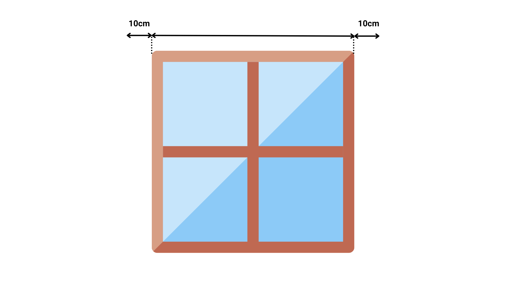
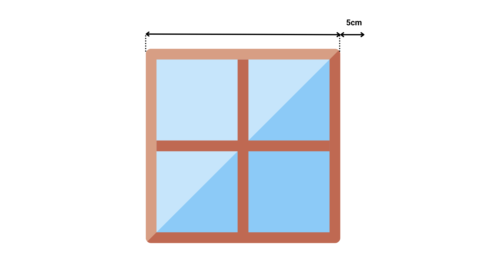
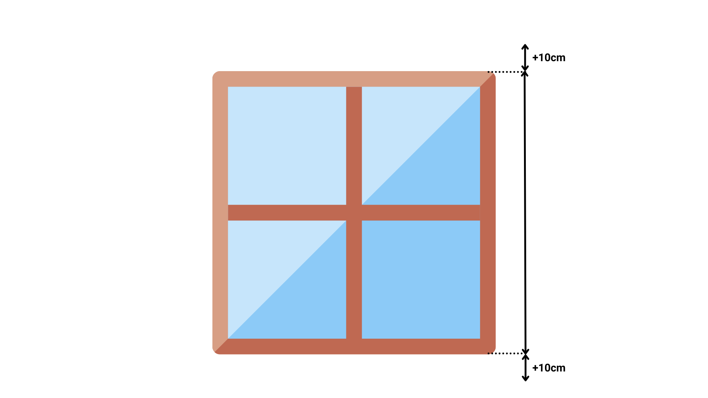
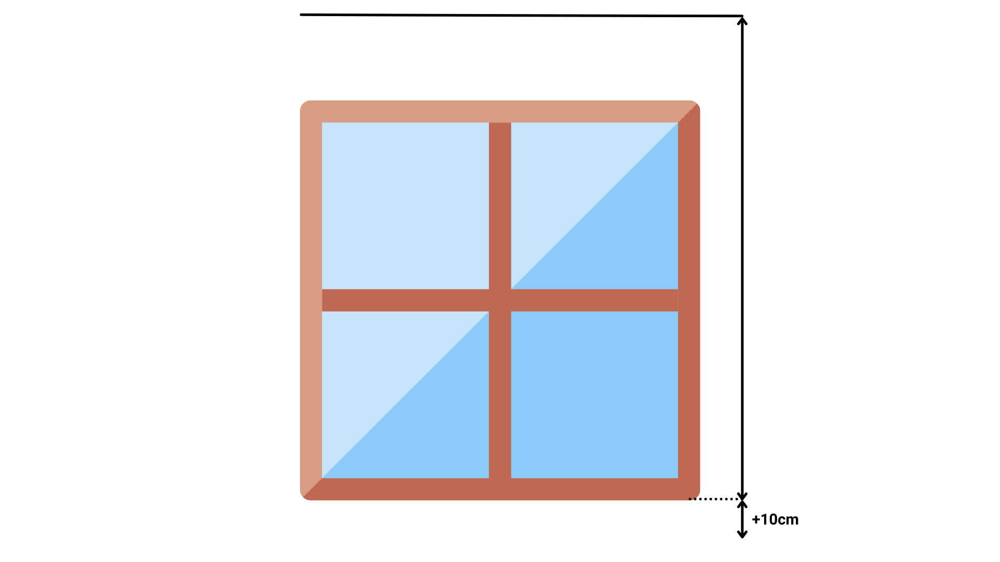

¿Como Medir?
El ancho que nos facilite será el ancho total de la cortina, de exterior a exterior de soporte. La medida del ancho del tejido será 4 cm menos, pues los mecanismos de la cortina ocupan 2 cm a cada lado.
Por favor, compruebe que el ancho de soporte a soporte es apto para colocarse en el espacio disponible y que el ancho del tejido cubre todas las zonas que usted desea.
Ancho
Caso 1. Hay suficiente espacio libre a ambos lados de la ventana.
Es el caso más sencillo y deseable de todos. Simplemente, debemos medir el ancho del marco de la ventana y añadirle 10 cm a cada lado, para que la cortina cubra bien la ventana, consiguiendo así la instalación que ofrece mejor estética.

Caso 2. Hay espacio libre solo a un lado de la ventana.
Cuando la ventana tiene espacio libre por un lado, pero no por el otro, medimos el ancho del marco de la ventana y le añadimos 5 cm por el lado que tengamos espacio, como se muestra en la siguiente ilustración:

Caso 3. La ventana está encajada entre paredes.
En caso de que esté encajada entre paredes por ambos lados y, por tanto, no tenga espacio libre ni a un lado ni a otro, mediremos el ancho del marco de la ventana y descontaremos 1 cm en total, 0.5 cm por cada lado, para prevenir que la Roller sea más grande que el espacio disponible y no quepa en el hueco disponible.
Caso 4. Si la ventana está encajonada.
Si la ventana tiene un cajón que sobresale más allá del marco de la propia ventana, hay que tenerlo en cuenta y tomar como ancho X el del cajón de persiana, que es el elemento que más sobresale. Despúes, deberemos sumarle los cm necesarios a un lado y otro, en función del caso en el que nos encontremos, según los descritos anteriormente.
Alto
Cuando en el recorrido de la cortina se interponen obstáculos que sobresalen de la pared más de 7 cm. (tiradores de ventanas, radiadores, cajones de persianas, etc.) hay que sortearlos.
Tenemos dos opciones:
a) Instalar la cortina al techo.
b) Añadir a su pedido un Soporte Largo que separe la cortina de la pared más de 7 cm.
Caso 1. Instalación a pared.
Para instalar nuestro Roller con anclaje a la pared, debemos medir el alto del marco de la ventana y después añadirle 10 cm, tanto por arriba como por abajo.

Caso 2. Instalación a techo.
Cuando haya que salvar obstáculos que sobresalgan mucho de la pared, como cajones de persianas, radiadores, etc, la instalación de la cortina al techo es una solución muy apropiada. Para calcular el alto de la cortina que necesitamos en este caso, medimos desde el techo hasta la parte inferior del marco de la ventana, y le añadimos 10 cm por abajo.
